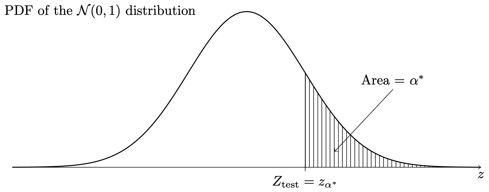
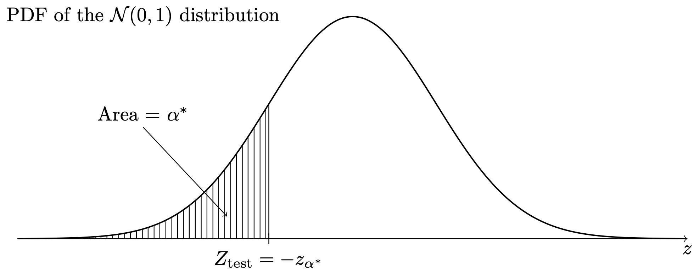
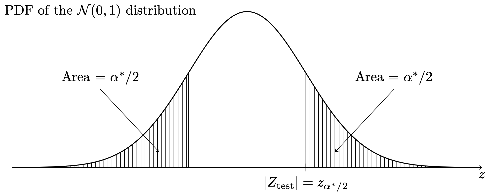
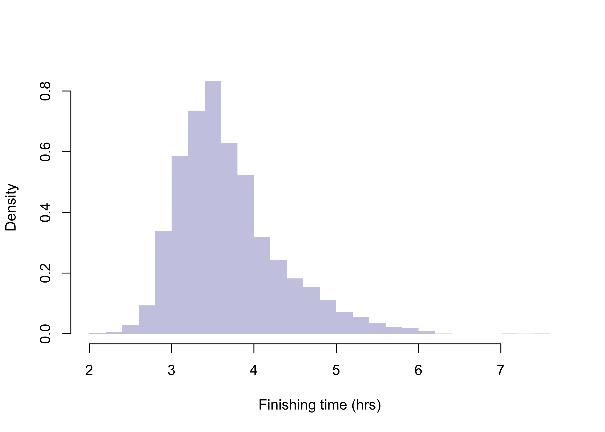
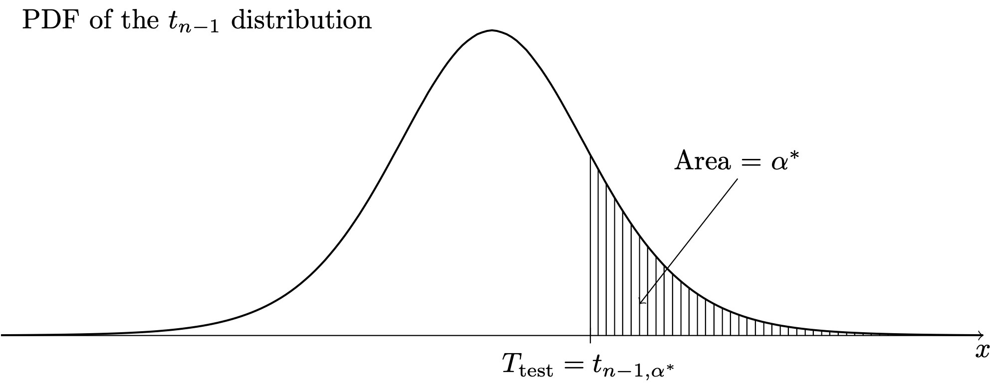
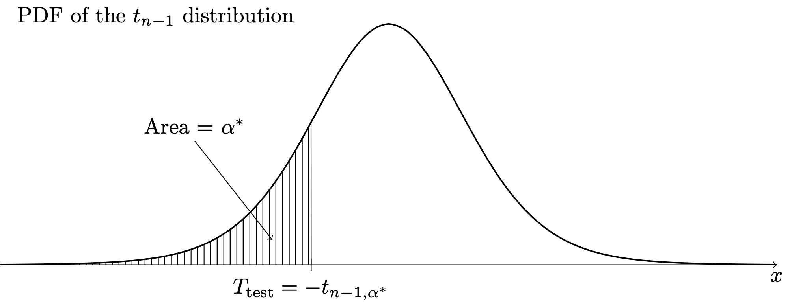
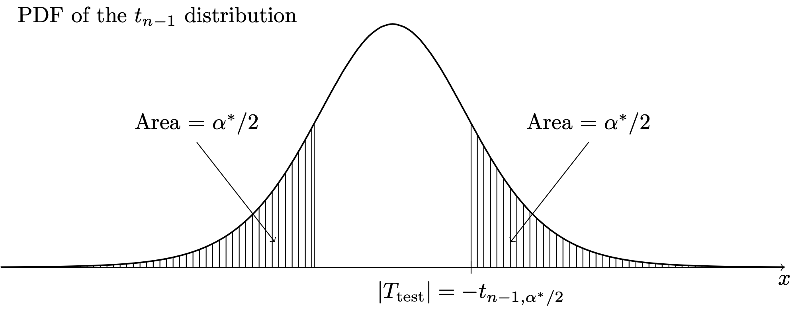

gr <- c(1.66, 1.61, 1.62, 1.69, 1.58, 1.43, 1.66,
1.69, 1.58, 1.20, 1.52, 1.60, 1.55, 1.67,
1.77, 1.50, 1.64, 1.54, 1.40, 1.36, 1.50,
1.40, 1.35, 1.48, 1.64, 1.91, 1.70)
xbar <- mean(gr)
sn <- sd(gr)
n <- length(gr)38 P values
$$
$$
Until now we have tested hypotheses by fixing a significance level \(\alpha \in (0,1)\) (which is intended to be an upper bound on the probability of committing a Type I error) and then comparing the value of a test statistic to a critical value, where the critical value is calibrated based on the choice of \(\alpha\). In our tests of hypotheses about a population mean or population proportion, we have seen that choosing a smaller \(\alpha\) amounts to requiring stronger evidence against the null hypothesis in order to reject it. For the test statistics \[ Z_{\operatorname{test}}= \frac{\bar X_n - \mu_0}{\sigma /\sqrt{n}} \quad \text{ and } \quad Z_{\operatorname{test}}= \frac{\hat p_n - p_0}{\sqrt{p_0(1-p_0)/n}}, \] used for testing hypotheses about the mean and the proportion, respectively, provided conditions are met, the critical values for the right-, left-, and two-sided tests were \(z_\alpha\), \(-z_\alpha\), and \(z_{\alpha/2}\), where these quantities lie further from zero for smaller values of \(\alpha\) (see Proposition 34.1 and Proposition 37.1). For the test statistic \[ T_{\operatorname{test}}= \frac{\bar X_n - \mu_0}{S_n /\sqrt{n}}, \] used for testing hypotheses about the mean when the variance is unknown, the critical values for the right-, left-, and two-sided tests were, in the case of a normal population, \(t_{n-1,\alpha}\), \(-t_{n-1,\alpha}\), and \(t_{n-1,\alpha/2}\), and, in the case of a non-normal population, \(z_\alpha\), \(-z_\alpha\), and \(z_{\alpha/2}\), provided the sample size is large (see Proposition 35.1 and Proposition 36.1). All of these critical values lie further from zero for smaller choices of the significance level \(\alpha\), so that smaller choices of \(\alpha\) require \(\bar X_n\) to lie further from the null value \(\mu_0\) for the null hypothesis to be rejected.
The significance level used by an investigator is thus important, because it sets a threshold for the strength of evidence required for rejecting the null hypotheses and claiming to have made a Discovery. Suppose two investigators will test the same set of hypotheses, \(H_0\) versus \(H_1\), the first with significance level \(0.10\) and the second with significance level \(0.01\); if both investigators reject the null hypothesis, which investigator will have made the more “significant” discovery? Or, of the two investigators, whose result admits of less doubt? Of whose result can we be more sure? The investigator using significance level \(0.10\) allows Type I errors one in ten times, while the investigator using \(0.01\) allows one Type I error in every one hundred studies. Therefore, since the significance level \(\alpha\) puts a cap on the probability of a Type I error, rejecting a null hypothesis at a small value of \(\alpha\) is a more convincing result than rejecting the null at a large value of \(\alpha\).
We have stated that \(\alpha = 0.05\) is a typical choice of the significance level. Suppose two investigators using \(\alpha = 0.05\) obtain test statistics such that the first investigator’s test statistic lies just barely beyond the critical value (just barely inside the rejection region) and the second investigator’s test statistic lies far beyond the critical value. Both investigators will report that they reject the null hypothesis at \(\alpha = 0.05\), but which of the two has stronger evidence against the null? It must be the one with the test statistic further beyond the critical value. The reason for this is that, even \(\alpha\) were made a little smaller, the critical value would move a little further away from zero, thus increasing the threshold of evidence needed to reject the null; the first investigator’s test statistic would then no longer lie in the rejection region, but that of the second investigator, since it lay far beyond the original critical value, will still lie beyond the new critical value. All this is to say that the investigator with the more extreme test statistic value could have rejected the null hypothesis with a significance level even smaller than the level \(\alpha = 0.05\) chosen at the outset.
In order to report with clarity the strength of evidence one has obtained against a null hypothesis, it is very sensible, in light of the above discussion, not only to report that one has rejected \(H_0\) at a typical significance level, say \(\alpha = 0.05\), but to report in addition to this the smallest possible significance level one could choose, while still rejecting the null hypothesis. That is, one can find the value of \(\alpha\) which makes the critical value of the test exactly equal to the value of the test statistic; then, choosing any significance level smaller than this would lead to a failure to reject the null, while at any significance level larger than this the same data would still lead to the rejection of the null. This brings us to the definition of the \(p\) value:
Definition 38.1 (P value) The \(p\) value associated with the value of a test statistic for testing a null hypothesis \(H_0\) is the smallest significance level at which the value of the test statistic will lead to the rejection of \(H_0\).
The \(p\) value can be equivalently defined as the size (maximum Type I error probability) of the test which uses, in a future study, the observed value of the test statistic as the critical value. This way we can interpret the \(p\) value as the probability of obtaining data carrying more evidence against \(H_0\) than the data we observed. We note that Definition 38.1 is somewhat cavalier in that it is careless of the fact that we require our test statistics to be strictly greater than our critical values in order to reject \(H_0\). Since we are concerned primarily with test statistics which have continuous probability distributions, however, we do not need to worry about strict versus non-strict inequalities, so we will let the definition stand.1
Reporting the \(p\) value associated with a test statistic is thus more informative than saying simply whether \(H_0\) is rejected at one particular significance level \(\alpha\). For example, if we report a \(p\) value of \(0.034\), it communicates that the data we observed would lead us to reject \(H_0\) at every significance level \(\alpha\) greater than \(0.034\) and lead us not to reject \(H_0\) at every significance level \(\alpha\) less than or equal to \(0.034\). The value \(0.034\) thus conveys exactly how strong the evidence is against \(H_0\). Some texts refer to the \(p\) value as the observed significance level. This is because the \(p\) value tells us at which significance level \(\alpha\) our observed test statistic would lie exactly at the boundary between rejecting and failing to reject \(H_0\).
In sum, we can interpret the \(p\) value as an index of the plausibility of \(H_0\). A small \(p\) value casts greater doubt on the null hypothesis.
We next consider how to compute \(p\) values associated with test statistic values for the tests of hypotheses we have considered so far.
38.1 P values from the standard normal distribution
Consider the following rejection rules based on a test statistic \(Z_{\operatorname{test}}\) assumed to have (or have approximately) the \(\mathcal{N}(0,1)\) distribution when the parameter of interest is equal to its null value2:
- Reject \(H_0\) if \(Z_{\operatorname{test}}> z_\alpha\).
- Reject \(H_0\) if \(Z_{\operatorname{test}}< -z_\alpha\).
- Reject \(H_0\) if \(|Z_{\operatorname{test}}| > z_{\alpha/2}\).
For each rejection rule, we can find the \(p\) value associated with the observed value of the test statistic \(Z_{\operatorname{test}}\) by finding the significance level which makes the critical value equal to the test statistic. Denoting this “observed” significance level by \(\alpha^*\) and letting \(Z\) denote a \(\mathcal{N}(0,1)\) random variable, we have for the three rejection rules, respectively:
- Setting \(Z_{\operatorname{test}}= z_{\alpha^*}\) and solving for \(\alpha^*\) gives \(\alpha^* = P(Z > Z_{\operatorname{test}})\).
- Setting \(Z_{\operatorname{test}}= -z_{\alpha^*}\) and solving for \(\alpha^*\) gives \(\alpha^* = P(Z < Z_{\operatorname{test}})\).
- Setting \(Z_{\operatorname{test}}= z_{\alpha^*/2}\) and solving for \(\alpha^*\) gives \(\alpha^* = 2P(Z > |Z_{\operatorname{test}}|)\).
In each of the above, the value of \(\alpha^*\) obtained as described, is the \(p\) value. Note that in case of the one-sided tests, the \(p\) value is the area under the \(\mathcal{N}(0,1)\) probability density function in the direction specified by the alternate hypothesis. That is, for the right-sided test, the \(p\) value is the area under the \(\mathcal{N}(0,1)\) PDF to the right of \(Z_{\operatorname{test}}\), as in Figure 38.1, and for the left-sided test, the \(p\) value is the area under the \(\mathcal{N}(0,1)\) PDF to the left of \(Z_{\operatorname{test}}\), as in Figure 38.2. For the two-sided test, the \(p\) value is equal to twice the area under the \(\mathcal{N}(0,1)\) PDF beyond the value of \(Z_{\operatorname{test}}\) in whichever direction from zero this lies, as in Figure 38.3.



This is how to find the \(p\) values associated with any of the tests prescribed in Proposition 34.1, Proposition 37.1, and Proposition 36.1. These tests all use critical values \(z_\alpha\), \(-z_\alpha\), and \(z_{\alpha/2}\); even though Proposition 36.1 prescribes using the test statistic \(T_{\operatorname{test}}\), this is assumed to have a normal distribution when \(n\) large, so \(T_{\operatorname{test}}\) can in the large \(n\) case be treated as \(Z_{\operatorname{test}}\).
We find that computing the \(p\) value gives us a way to decide whether or not to reject \(H_0\) without comparing the test statistic to a critical value: After obtaining the \(p\) value associated with an observed value of a test statistic with respect to a rejection rule, one may, if one has a particular significance level in mind, such as \(\alpha = 0.05\), one can simply reject \(H_0\) if the \(p\) value is less than \(\alpha\). This way, one does not even need to look up the critical values \(z_\alpha\), \(-z_{\alpha}\), and \(z_{\alpha/2}\). Instead, one can simple find the \(p\) value and reject \(H_0\) if it is smaller than \(\alpha\).
Example 38.1 (Golden ratio data) Recall the golden ratio data in Example 17.2:
Let’s obtain the \(p\) value observed for the tests
- Reject \(H_0\): \(\mu \leq 1.618\) in favor of \(H_1\): \(\mu > 1.618\) if \(Z_{\operatorname{test}}> z_{\alpha}\)
- Reject \(H_0\): \(\mu \geq 1.618\) in favor of \(H_1\): \(\mu < 1.618\) if \(Z_{\operatorname{test}}< -z_{\alpha}\)
- Reject \(H_0\): \(\mu = 1.618\) in favor of \(H_1\): \(\mu \neq 1.618\) if \(|Z_{\operatorname{test}}| >z_{\alpha/2}\)
assuming \(\sigma = 0.15\) is known. The sample mean is \(\bar X_n = 1.565\) and the sample size is \(n = 27\). The first step is to compute the value of the test statistic \(Z_{\operatorname{test}}\). We obtain \[ Z_{\operatorname{test}}= \frac{1.565 - 1.618}{0.15/\sqrt{27}} = -1.84. \] The \(p\) value for the right-sided test is \(P(Z > -1.84) = 0.9671\), which is the area under the standard normal PDF to the right of \(-1.84\). For the left-sided test the \(p\) value is \(P(Z < -1.84) = 0.0329\), which is the area under the same curve to the left of \(-1.84\). For the two-sided test it is \(2 P(Z > 1.84) = 0.0658\), which is twice the area under the curve to the right of \(1.84\).
From the \(p\) values we see that if we were using significance level, say, \(\alpha = 0.05\), we would fail to reject \(H_0\): \(\mu \leq 1.618\) in favor of \(H_1\): \(\mu > 1.618\) and we would fail to reject \(H_0\): \(\mu = 1.618\) in favor of \(H_1\): \(\mu \neq 1.618\), but we would reject \(H_0\): \(\mu \geq 1.618\) in favor of \(H_1\): \(\mu < 1.618\), where for each set of hypotheses we simply compare the \(p\) value to the significance level \(\alpha = 0.05\).
Exercise 38.1 (Counting fish) Suppose an invasive fish will begin to dominate a system of lakes if it makes up more than \(10\%\) of the population of fish in those lakes. In a random sample of \(527\) fish drawn from the system of lakes, \(70\) of the fish were of the invasive species. Action will be taken if the invasive species is determined to comprise more than \(10\%\) of the fish population in the system of lakes.
Exercise 38.2 (2009 Boston Marathon mens finishing times) Refer to the data in Example 19.1 and regard the mens finishing times as a population of values
Code
bos09 <- read.csv("../data/bos09.csv")
m <- bos09$hrs[bos09$gender=="M"]
mu <- round(mean(m),3)
sigma <- round(sqrt(mean((m - mu)**2)),3)
par(bg = NA)
hist(m,
breaks = 30,
col = rgb(0,0,.545,.25),
border = NA,
main = "",
xlab = "Finishing time (hrs)",
freq= FALSE)
Code
set.seed(1)
n <- 50
X <- sample(m,n)
Xbar <- round(mean(X),3)
Sn <- round(sd(X),3)The population has mean \(\mu = 3.693\) and standard deviation \(\sigma = 0.628\), but suppose we don’t know these values, and we draw a random sample of size \(n = 50\), obtaining \(\bar X_n = 3.667\) and \(S_n = 0.582\). Obtain the \(p\) value for testing each of the below sets of hypotheses based on treating the test statistic \(T_{\operatorname{test}}\) as a \(\mathcal{N}(0,1)\) random variable when \(\mu\) is equal to the null value \(1.618\):
38.2 P values from a \(t\) distribution
Now we consider rejection rules for hypotheses concerning the mean of a normal distribution based on the test statistic \(T_{\operatorname{test}}\). For the right-, left-, and two-sided sets of hypotheses, we have, respectively, these rejection rules:
- Reject \(H_0\) if \(T_{\operatorname{test}}> t_{n-1,\alpha}\).
- Reject \(H_0\) if \(T_{\operatorname{test}}< -t_{n-1,\alpha}\).
- Reject \(H_0\) if \(|T_{\operatorname{test}}| > t_{n-1,\alpha/2}\).
Just as before, we define the \(p\) value in each case as the significance level at which the critical value is exactly equal to the observed value of the test statistic. Calling this observed significance level \(\alpha^*\) and letting \(T\) denote a random variable having the \(t_{n-1}\) distribution, we have:
- Setting \(T_{\operatorname{test}}= t_{n-1,\alpha^*}\) and solving for \(\alpha^*\) gives \(\alpha^* = P(T > T_{\operatorname{test}})\).
- Setting \(T_{\operatorname{test}}= -t_{n-1,\alpha^*}\) and solving for \(\alpha^*\) gives \(\alpha^* = P(T < T_{\operatorname{test}})\).
- Setting \(T_{\operatorname{test}}= t_{n-1,\alpha^*/2}\) and solving for \(\alpha^*\) gives \(\alpha^* = 2P(T > |T_{\operatorname{test}}|)\).
The significance level \(\alpha^*\) is the \(p\) value in each case. The \(p\) values are obtained as areas under the \(t_{n-1}\) PDF as depicted in Figure 38.4, Figure 38.5, and Figure 38.6.



Example 38.2 (Golden ratio data continued)
Code
gr <- c(1.66, 1.61, 1.62, 1.69, 1.58, 1.43, 1.66,
1.69, 1.58, 1.20, 1.52, 1.60, 1.55, 1.67,
1.77, 1.50, 1.64, 1.54, 1.40, 1.36, 1.50,
1.40, 1.35, 1.48, 1.64, 1.91, 1.70)
xbar <- mean(gr)
sn <- sd(gr)
n <- length(gr)
Ttest <- (xbar - 1.618)/(sn/sqrt(n))For the golden ratio data of Example 17.2, let’s obtain the \(p\) value for the tests
- Reject \(H_0\): \(\mu \leq 1.618\) in favor of \(H_1\): \(\mu > 1.618\) if \(T_{\operatorname{test}}> t_{n-1,\alpha}\)
- Reject \(H_0\): \(\mu \geq 1.618\) in favor of \(H_1\): \(\mu < 1.618\) if \(T_{\operatorname{test}}< -t_{n-1,\alpha}\)
- Reject \(H_0\): \(\mu = 1.618\) in favor of \(H_1\): \(\mu \neq 1.618\) if \(|T_{\operatorname{test}}| >t_{n-1,\alpha/2}\)
associated with observing \(\bar X_n = 1.565\) and \(S_n = 0.148\), where \(n = 27\). The value of the test statistic is \[ T_{\operatorname{test}}= \frac{1.565 - 1.618}{0.148/\sqrt{27}} = -1.866. \] Here is row \(n-1 = 26\) of the \(t\) table, giving certain upper quantiles of the \(t_{27-1}\) distribution:
Code
df <- n-1
a <- c(0.200,0.100,0.050,0.025,0.010,0.005,0.001)
tab <- matrix(round(qt(1-a,df),4),1,length(a))
rownames(tab) <- df
colnames(tab) <- a
tab 0.2 0.1 0.05 0.025 0.01 0.005 0.001
26 0.856 1.31 1.71 2.06 2.48 2.78 3.44Based on the \(t\)-table, we see that the \(p\) value for the right-sided test lies somewhere between \(0.95\) and \(0.975\), the \(p\) value for the left-sided test is between \(0.025\) and \(0.05\), and the \(p\)-value for the two-sided test is somewhere between \(0.05\) and \(0.10\) (obtained by doubling the endpoints). These \(p\) values can be obtained exactly using the pt() function: The right-sided \(p\)-value is \(0.963\), obtained with 1- pt(-1.866,n-1), the left-sided is \(0.037\), obtained with pt(-1.866,n-1), and the two-sided \(p\) value is \(0.073\), obtained with 2*(1-pt(abs(-1.866),n-1)).
The \(p\) value could be more correctly defined as the largest significance level at which the value of the test statistic will lead to the failure to reject of \(H_0\), but this seems more confusing.↩︎
Then is, when \(\mu = \mu_0\) or \(p = p_0\), as the case may be.↩︎
Let \(p\) denote the proportion of fish belonging to the invasive species and test \(H_0\): \(p \leq 0.10\) versus \(H_1\): \(p > 0.10\).↩︎
We compute the \(p\)-value by first computing the test statistic \[ \frac{70/527 - 0.10}{\sqrt{0.10(0.90)/527}} = 2.51. \] The \(p\) value is the area under the standard Normal pdf to the right (the direction of the alternative) of this value, which is \(0.006\).↩︎
We begin by computing the test statistic \[ T_{\operatorname{test}}= \frac{3.667 - 3.75}{0.582/\sqrt{50}} = -1.008. \] The sample mean \(\bar X_n < 3.75\) carries evidence in favor of \(H_0\), so we have no grounds to reject it. This is reflected in the negative value of the test statistic. However, we can still compute the \(p\) value as the area under the \(\mathcal{N}(0,1)\) PDF to the right of \(-1.008\). Using the \(z\) table after rounding, this is \(0.8438\). ↩︎
The \(p\) value is the area under the \(\mathcal{N}(0,1)\) PDF to the left of \(-1.008\). This is (subtracting the right-sided \(p\) value from one) equal to \(0.1562\).↩︎
The \(p\) value will be twice the area under the \(\mathcal{N}(0,1)\) PDF to the left of \(-1.008\). This is two times the left-sided \(p\) value. We obtain \(0.3124\).↩︎